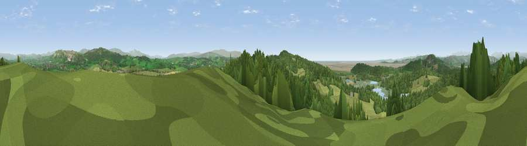

Cringlebarrow Hill
#4532 in England · top 18% of its area beats it · near Yealand RedmayneThe view, rendered

A 360° render of this exact spot computed from the terrain model, tree cover and land cover — summer colours, afternoon light, calibrated against photographs of famous viewpoints. Real trees, hedges and buildings will differ in detail.
The panorama
Grey silhouette: terrain skyline in each direction (720 bearings, Earth curvature and refraction included). Dashed green: skyline with trees (+15 m) and buildings (+8 m) as obstacles. Blue strip: how far the ground is visible on each bearing.
Where the view opens
Wedge length = distance to the farthest visible ground on that bearing (vegetation-aware). Rings at 10, 25 and 50 km.
What fills the view
55% grassland · 38% woodland · 3% water · 2% built-up · 1% wetland · 1% cropland
Angular shares of the visible panorama (visual magnitude), not map area. Landscape diversity 0.42 (0–1 Shannon).
Key numbers
More beautiful places nearby
The staircase of upgrades: each row has a higher view potential than everything closer. Driving times are estimates from straight-line distance, calibrated against real road routing — check an actual route before setting out.
| Place | Direction | Drive | Score |
|---|---|---|---|
| Warton Crag | SSW · 3 km | ~7 min | 83.2 |
| Viewpoint near Grange-over-Sands | WNW · 11 km | ~21 min | 83.4 |
| Viewpoint near Cartmel | WNW · 15 km | ~26 min | 87.0 |
| Viewpoint near Cartmel | WNW · 15 km | ~27 min | 87.2 |
| Viewpoint near Finsthwaite | NW · 17 km | ~30 min | 90.3 |
| The Knoll | S · 388 km | ~373 min | 91.0 |
54.17214, -2.76933 · source: dobih hill · position refined by local search. Computed location — check access rights before visiting.